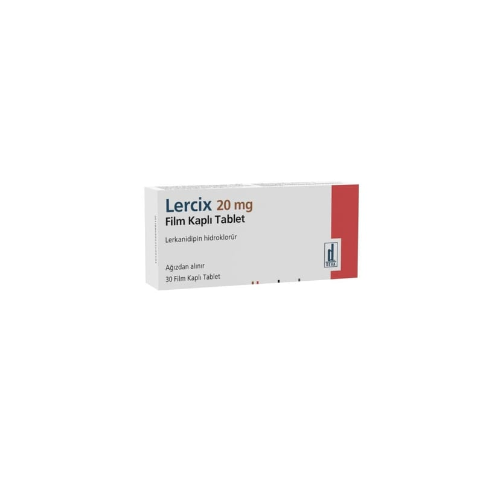

Lercix 20 mg Film Kaplı Tablet, 30 Adet

Ne için kullanılır
KT · Bölüm 1LERCİX 20 mg film kaplı tablet, hızlı salım yapan, pembe renkli, bir tarafı çentikli,
bikonveks, yuvarlak film kaplı tabletler halindedir.
LERCİX etkin madde olarak 20 mg lerkanidipin hidroklorür içeren 30 tabletlik kutularda
sunulmaktadır.
LERCİX, dihidropiridin grubu bir kalsiyum antagonistidir ve kalsiyumun hücre zarından kalp
kası ve düz kas hücrelerinin içine akımını durdurur. Antihipertansif etkisi, damar düz kasları
üzerindeki doğrudan gevşetici etkisi ile kan basıncını azaltmasından kaynaklanmaktadır.
LERCİX hafif ila orta şiddetli hipertansiyonunuzu (yüksek kan basıncınızı) tedavi etmek için
kullanılır. 18 yaşın altındaki çocuklarda kullanımı önerilmemektedir.
Bu belge, güvenli elektronik imza ile imzalanmıştır. Belge Doğrulama Kodu: IRG83Z1AxMOFyMOFyZLAxZmxXMOFy Belge Takip Adresi:https://www.turkiye.gov.tr/saglik-titck-ebys 1/7